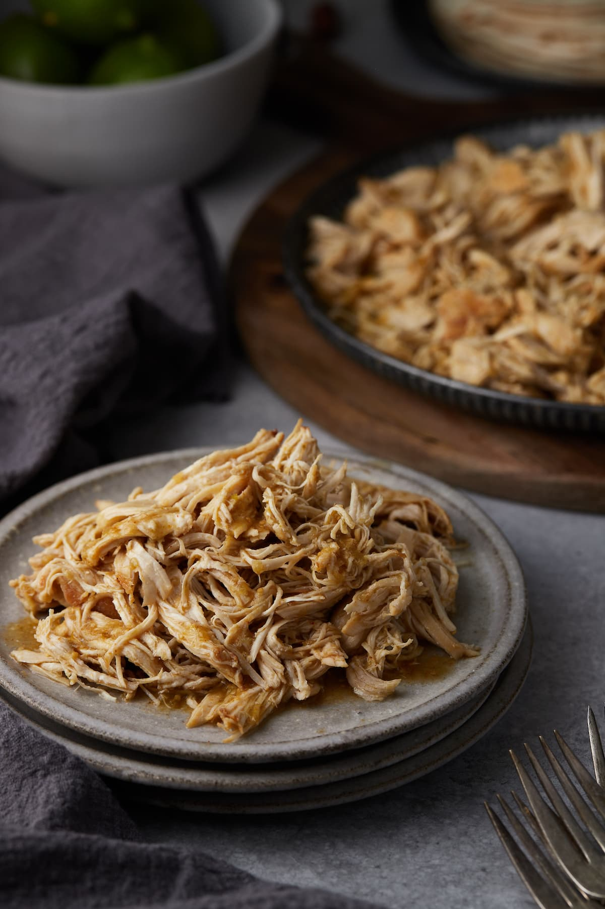

Salsa Verde

Description
This recipe is as easy as it comes. Literally throw a bunch of ingredients into a pressure cooker and in 15
minutes, you have immensely flavorful, perfectly cooked salsa verde.
The only part of this recipe that may get your hands a little dirty is the shredding of the chicken. But hey,
that's what kids are for!
Ingredients
- 1 medium onion, diced
- 2 chicken breasts
- 1 tsp cumin
- 2-3 cloves garlic
- 3 tomatillos, diced
- 1 poblano, diced
Steps
- Throw all of your ingredients into a pressure cooker and set the timer for 10 minutes once at pressure
- Allow the natural release of the pressure. Once complete, separate the chicken and start to shred it.
- Take the rest of the ingredients and blend them together until smooth.
- Return the chicken to the salsa verde and reduce if necessary. Voila!